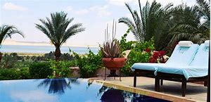
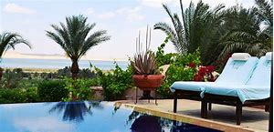
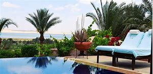

The Siwa Oasis is an urban oasis in Egypt between the Qattara Depression and the Great Sand Sea in the Western Desert, 50 km (30 mi) east of the Libyan border, and 560 km (348 mi) from Cairo. About 80 km (50 mi) in length and 20 km (12 mi) wide, Siwa Oasis is one of Egypt's most isolated settlements . Siwa was also the site of some fighting during World War I and World War II. The British Army's Long Range Desert Group (LRDG) was based here, but Rommel's Afrika Korps also took possession three times. The ancient fortress of Siwa, known as the Shali Ghadi ("Shali" being the name of the town, and "Ghadi" meaning remote), was built on natural rock (an inselberg) and made of kershif (salt and mud-brick)[1] and palm logs. After it was damaged by three days of heavy rains in 1926[19] it was abandoned for similar unreinforced construction housing on the plain surrounding it, and in some cases those, in turn, have been replaced by more modern cinder block and sheet metal roof buildings. Only one building in the Shali complex has been repaired and is in use, a mosque. Gradually eroded by infrequent rains and slowly collapsing, the Shali remains a prominent feature, towering five stories above the modern town and lit at night by floodlights. It is most easily approached from its southwest side, south of the end of the paved road which curves around from the north side of the Shali.
